Douze heures séparent l'ouverture néo-zélandaise de votre minuit. Cette page sert à les traverser sans spoiler, puis à bien démarrer : réglages, premier trajet, premières missions — et les mesures réelles sur votre console.
PRESSE · 18/11PRESSE · 18/11SPOILER
ILLUSTRATION IA · NON OFFICIEL
PRESSE · 18/11
La première nuit a commencé sans vous
Pendant que l'Europe dort encore, la Nouvelle-Zélande joue. Le jeu s'est ouvert là-bas le 18 novembre à 11:00 UTC — midi à Paris — et les premiers extraits publiés par des joueurs locaux montrent la conduite de nuit, la circulation et les néons. Une streameuse néo-zélandaise l'a résumé en deux mots : « un festin visuel ». REL-24
11:00 UTC · déjà jouable
Nouvelle-Zélande, puis l'Australie. Premiers extraits publiés en clair sur les réseaux.
Minuit local · votre tour
En France, l'ouverture se fait à 00:00 CET dans la nuit du 18 au 19.
36 h · notes utilisateurs
Metacritic n'ouvre les scores joueurs que 36 heures après le lancement. REV-30
La fenêtre dangereuse — entre l'ouverture néo-zélandaise et votre minuit local, il s'écoule environ douze heures. C'est exactement la durée pendant laquelle les spoilers circulent avant que vous puissiez jouer. Cette page est écrite pour ces douze heures.
PRESSE · 18/11
La première heure, selon ceux qui l'ont déjà vécue
Les fils de discussion des mois précédents convergent vers une méthode simple, et elle n'est pas celle qu'on croit : ne pas traverser la carte d'emblée. Voici l'ordre qui revient le plus, condensé en cinq temps. TIP-50
Deux réglages avant de jouer — couper le flou de mouvement et le grain de film, puis calibrer la luminosité HDR. C'est le premier conseil cité, avant même le gameplay. TIP-51
Marcher, pas rouler — faire le tour du pâté de maisons à pied, écouter les conversations de rue, entrer dans un ou deux intérieurs. La densité est ce que tout le monde retient du jeu.
La première voiture, radio allumée — rouler sans destination pendant dix minutes. C'est le conseil le plus répété de tous les fils.
Trois ou quatre missions — assez pour débloquer les systèmes de base, pas assez pour se presser.
Ce que personne ne conseille — foncer vers Vice City en ligne droite dès la première minute, ou enchaîner l'histoire d'une traite. Les joueurs qui l'ont fait le regrettent en un mot : la ville se découvre, elle ne se traverse pas.
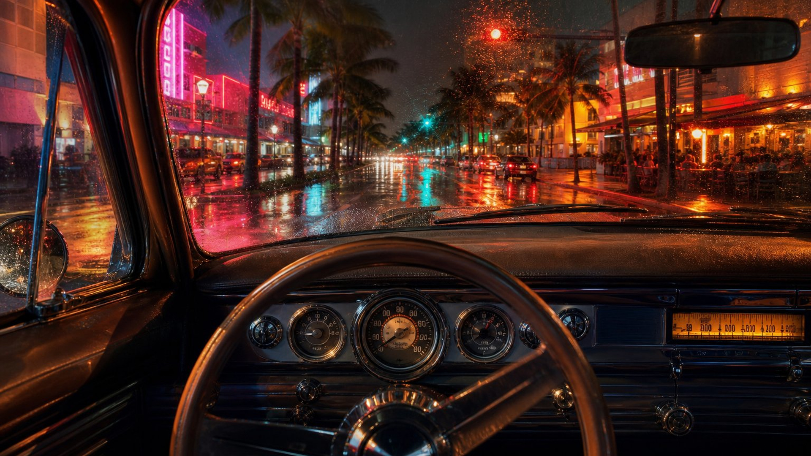
Illustration originale générée par IA (JPG, non officielle) : le premier trajet sans but, celui dont tout le monde parle.
OFFICIELPRESSE · 18/11
Vérifié le 18/11 : ce qu'il faut faire avant de lancer
Une partie de la préparation a changé dans les dernières heures. Voici les points contrôlés, avec leur statut réel — et deux réflexes qui coûtent cher s'ils sont oubliés.
1. Deux mises à jour, pas une
Mises à jour publiées avant l'ouverture mondiale PRESSE · 18/11
Version
Date
PS5
Xbox Series X|S
1.002
13/11
≈ 1,07 Go
≈ 2,18 Go
01.002.001
16/11
≈ 602 Mo
≈ 1,6 Go
Rockstar n'a pas publié de notes et n'a qualifié aucun de ces deux correctifs de « patch day one » : leur contenu reste inconnu. Le préchargement, lui, a ouvert le 10 novembre (annonce officielle du 3 novembre) et pèse jusqu'à 212 Go selon la console. LAU-31
2. PS5 : la mise à jour système est obligatoire
Bloquant, pas cosmétique — Sony a publié le 17/11 un firmware système (version 26.07-14.23.00, ≈ 1,2 Go) requis pour lancer le jeu et accéder à ses fonctions en ligne. Réglages → Système → Logiciel système → Mise à jour. Si les téléchargements automatiques sont actifs, elle s'installe seule. PRESSE · 18/11
3. L'ouverture suit les fuseaux, pas un instant unique
Premier fuseau : la Nouvelle-Zélande, minuit local le 19, soit 11:00 UTC le 18 et midi à Paris. Dernier : Mexico, 06:00 UTC le 19. En France métropolitaine, l'ouverture se fait donc à minuit, heure de Paris, dans la nuit du 18 au 19. L'astuce « région Nouvelle-Zélande » fonctionne sur Xbox (réglage de région de la console) ; sur PS5 l'ouverture suit la région du compte, ce qui suppose un compte et un achat séparés — et des conditions d'utilisation qui ne le prévoient pas. LAU-32
4. Deux réflexes qui coûtent de l'argent
Déposer l'argent liquide
L'argent liquide porté sur soi disparaît si vous êtes tué ou arrêté : Rob Nelson (Rockstar North) l'a confirmé, et le jeu sépare solde bancaire, espèces et butin en sac. Déposer à l'ATM ou via l'application bancaire après chaque coup, avant de recommencer. ECN-27
Ne pas compter sur le online
Le 19 novembre, c'est du solo : Rockstar décrit GTA VI comme « a single player experience » depuis le 24 juin, et aucun mode en ligne n'est annoncé — ni date, ni nom, ni nombre de joueurs. Le GTA Online de GTA V continue en parallèle. Détail sur la page Online.
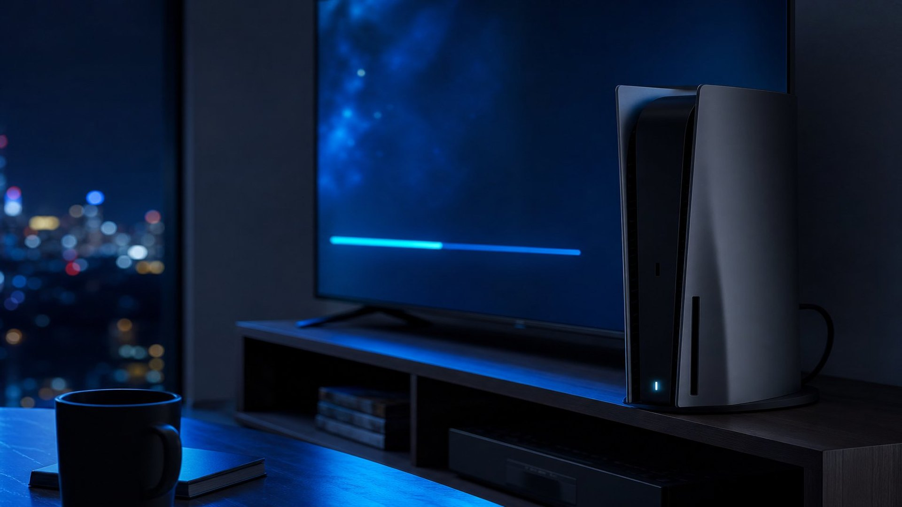
Préchargement, deux correctifs, un firmware : la vraie liste de courses avant minuit. Illustration originale générée par IA (JPG, non officielle). ILLUSTRATION IA
PRESSE · 18/11
L'ouverture mondiale, heure par heure
Le déblocage n'est pas un instant, c'est une vague qui fait le tour de la planète pendant une vingtaine d'heures. Savoir où en est la vague change deux choses : ce que vous pouvez déjà lire sans vous faire spoiler, et ce que les serveurs encaissent au moment où vous cliquez. LAU-38
Ouverture par fuseau, le 19 novembre
Zone
Heure locale
UTC
Ce que ça implique
Nouvelle-Zélande
00:00 (19/11)
11:00 (18/11)
Premier fuseau : c'est là que naissent les premiers spoilers.
Europe centrale / Paris
00:00 (19/11)
23:00 (18/11)
Douze heures après la Nouvelle-Zélande. Le pic de charge européen arrive ici.
Royaume-Uni
00:00 (19/11)
00:00 (19/11)
Une heure après Paris : les retours européens sont déjà abondants.
Côte est des États-Unis
00:00 (19/11)
05:00 (19/11)
Dix-huit heures de décalage : le filtre anti-spoiler doit tenir jusque-là.
Côte ouest
00:00 (19/11)
08:00 (19/11)
Dernier grand marché, vingt et une heures après le premier.
Ce que disent les premiers joueurs
Depuis la Nouvelle-Zélande : graphismes salués, sensation de fluidité, écriture jugée profonde, et un point qui revient — les systèmes météo locaux, une tempête qui « enveloppe la carte » et se déplace comme un vrai front. Aucune panne technique majeure signalée dans les heures suivant l'ouverture. LAU-38
Le point de friction n'est pas le téléchargement
Avec 212 Go déjà sur le disque, l'obstacle du soir sera la vérification de licence et les serveurs de compte, pas la bande passante. D'où l'intérêt d'avoir lancé le jeu une première fois avant minuit pour absorber les correctifs. LAU-37
Le chiffre qui circule n'est pas une preuve. « 99 sur Metacritic » a été partagé en masse dès l'ouverture néo-zélandaise, présenté par la couverture en direct comme non vérifié à cet instant. Notre relevé vient des agrégateurs consultés le 18/11 — et bougera encore. REV-27
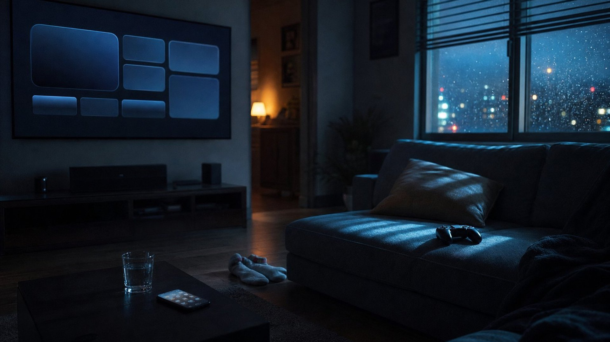
Le premier fuseau joue pendant que les autres dorment : la vague met vingt et une heures à faire le tour. ILLUSTRATION IA
PRESSE · 18/11
Si le jeu ne démarre pas : les cinq causes réelles
Le soir de la sortie, la plupart des « pannes » ne sont pas des bugs. Voici les cinq causes documentées, dans l'ordre où il faut les vérifier — et ce qu'il ne faut pas croire. LAU-33
Dépannage du soir de sortie
Symptôme
Cause la plus probable
Solution
« Le jeu ne se lance pas ce soir »
Le déblocage suit minuit local, pas une heure mondiale
Rien à réparer : vérifier l'heure de votre fuseau
Préchargement bloqué
Saturation réseau ou espace insuffisant
Mettre en pause et reprendre (PS5), vérifier la file d'installation (Xbox)
Installation qui échoue
Espace libre insuffisant
Jusqu'à 212 Go demandés ; le paquet Xbox est annoncé à ~225 Go
« Vous ne possédez pas ce jeu » (Xbox)
Précommande annulée ou prélèvement refusé
Vérifier le moyen de paiement et l'historique de commande
Code de boîte refusé
Code acheté dans une autre région
Un code ne fonctionne que sur un compte de sa région de vente
Ce qu'il ne faut pas croire — les listes de « codes d'erreur et correctifs » publiées avant la sortie sont inventées : Rockstar n'avait publié aucune note de correctif au 18/11, et aucune liste d'incidents confirmés. En cas de doute, la seule source qui vaut est l'état des services de Rockstar, de Sony et de Microsoft.
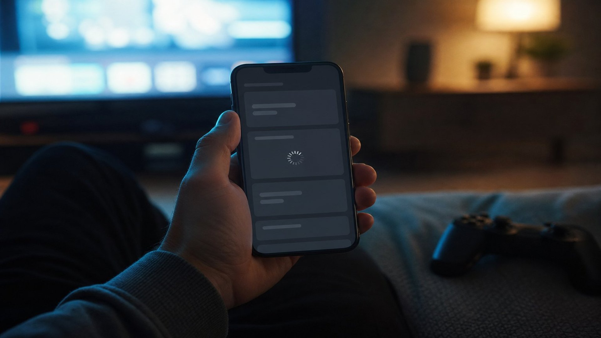
Avant de réinstaller 200 Go : vérifier l'état des services. Illustration originale générée par IA (JPG, non officielle). ILLUSTRATION IA
OFFICIEL · 18/11
Avant minuit : les trois vérifications qui évitent une soirée perdue
Le lancement n'a pas été bloqué par les serveurs mais par deux téléchargements : le firmware de la console et la mise à jour du jeu. Voici l'ordre exact, et ce qui reste inconnu.
1. Le firmware PS5 est obligatoire
Sony a publié le 17 novembre le firmware 26.07-14.23.00, et PlayStation Support précise qu'il est requis avant de lancer le jeu, sur PS5 comme sur PS5 Pro. Ses notes officielles ne parlent que de « correctifs de sécurité » : aucune explication du lien avec le jeu n'est donnée. REL-32
2. Aucun patch de lancement confirmé
Deux mises à jour ont suivi le préchargement (01.002.000 le 13, 01.002.001 le 16), et Rockstar n'a publié ni notes ni calendrier pour le jour J. Une troisième reste possible : garder plusieurs gigaoctets libres au-delà des 212 Go installés et vérifier manuellement « Check for Update » sur la vignette du jeu. REL-33
3. Ce qui reste inconnu, et pourquoi
Aucune note de version, aucune explication de taille, aucun détail sur ce que changent ces correctifs. Le site ne comble pas ce vide : il donne les versions, les tailles et le calendrier de déploiement, et signale explicitement l'absence de contenu officiel. FIX-06
Ce que cela coûte si on l'ignore
Un firmware manquant impose un redémarrage de la console au moment du déblocage ; un préchargement interrompu oblige à retélécharger jusqu'à 212 Go — près de cinq heures à 100 Mbps. Les deux se règlent la veille, pas à minuit. REL-33
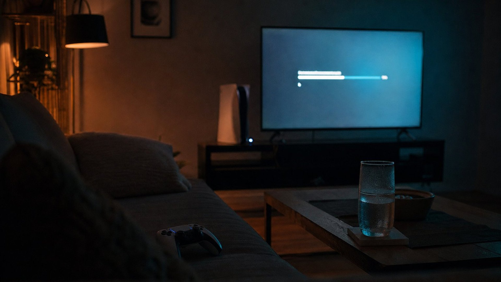
La mise à jour système de la console : obligatoire, et jamais mentionnée dans les publicités de lancement. ILLUSTRATION IA
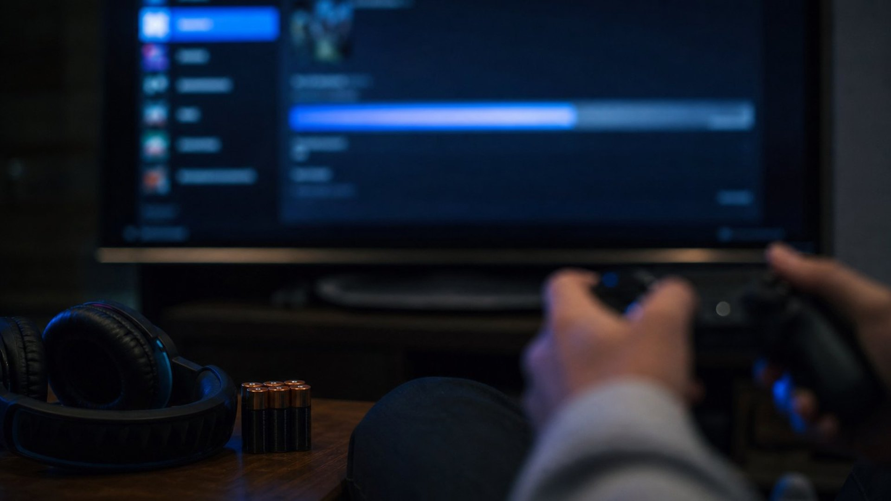
Le préchargement interrompu est la seule vraie cause de soirée gâchée. ILLUSTRATION IA
PRESSE · 18/11
Les deux correctifs, version par version
Rockstar n'a publié aucune note pour les deux mises à jour qui ont suivi le préchargement. Ce qui est vérifiable, ce sont les versions, les tailles et le calendrier de déploiement — et cela suffit pour éviter la mauvaise surprise de 23 h 55.
Relevés de presse, sans notes officielles
Version
Déploiement
PS5
Xbox Series X|S
01.002.000
13/11, par vagues (≈ 50 % des consoles, le reste ≈ 11 h plus tard)
≈ 1,07 Go
≈ 2,18 Go
01.002.001
16/11, en trois vagues espacées d'environ 12 h sur PS5
≈ 602,5 Mo
≈ 1,59 Go (non confirmé par Rockstar)
Pourquoi le déploiement est étalé
Pousser le même fichier sur des millions de consoles au même instant mettrait les serveurs à genoux. D'où des vagues successives, qui expliquent les « je ne l'ai pas encore » dans les heures qui suivent. Un relevé manuel dans le tableau de bord de la console tranche : Paramètres → Mises à jour. LAU-36
Un troisième correctif reste possible
Rockstar n'a confirmé aucun patch « day one » — ni taille, ni contenu, ni horaire. La seule hypothèse raisonnable : garder plusieurs gigaoctets libres au-delà des 212 Go installés. Un re-téléchargement complet à 100 Mbps coûte environ 4 h 45, soit toute la soirée. LAU-37
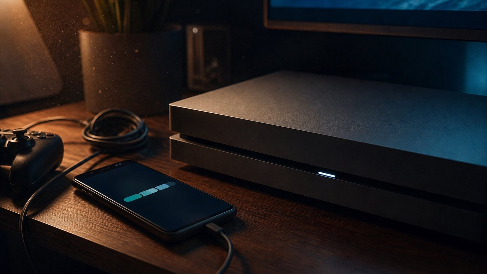
Deux vagues, deux versions, zéro note : le point de situation vérifiable à J-1. ILLUSTRATION IA
PRESSE · 19/11
Ce que les correctifs changent vraiment
Trois faits tiennent debout sans note officielle : les tailles, le calendrier, et ce que les fichiers ne touchent pas. Tout le reste relève de la reconstitution.
FIX-021.002.000, le 13/11 : environ 1,073 Go sur PS5, obligatoire. Le patch remplace des fichiers au lieu d'en ajouter — l'installation retombe à 209,9 Go — et ne touche ni l'audio, ni les cinématiques, ni les bases de textures.
FIX-0301.002.001, à partir du 16/11 : 602,5 Mo sur PS5, environ 1,59 Go sur Xbox (rapporté, non confirmé), en trois vagues de douze heures.
FIX-04Aucune note officielle au 17/11 : Rockstar Support publie ses notes une par une, jamais sur le Newswire. Toute liste de correctifs antérieure est une reconstitution.
Aucun mode performance n'est arrivé, et aucun n'est annoncé. Les 30 images par seconde restent la cible sur toutes les consoles, PS5 Pro incluse : les correctifs corrigent, ils n'ouvrent pas d'option graphique. FIX-02
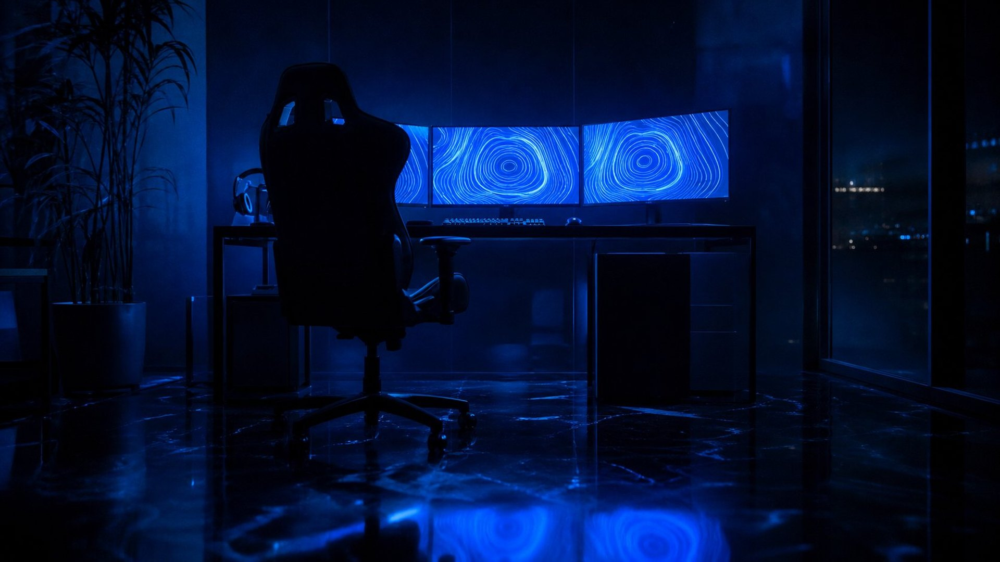
Trois vagues, deux tailles : un déploiement étalé pour ne pas saturer les serveurs. ILLUSTRATION IA
PRESSE · 19/11
Qui tient vraiment 30 images par seconde
Le plafond est le même partout, la tenue ne l'est pas. Voici ce que l'analyse technique de la première nuit établit, sans arrondir vers le haut.
PRF-01PS5 Pro : quasi verrouillée à 30, y compris en circulation dense ; seule une scène saturée d'explosions la fait descendre à 24.
PRF-01PS5 et Series X : 30 pendant la plupart des déplacements, mais des passages dans la vingtaine haute dès que la ville se remplit, avec un plancher à 22 relevé sur Series X.
PRF-01Series S : autour de 27 en jeu libre, 25 en fusillade, 20 dans les scènes intenses et 18-19 sur une fusillade explosive. C'est la version la plus éloignée de la cible.
DFF-02Les ombres tracées par rayons sont l'exclusivité de la PS5 Pro ; les trois autres versions gardent l'illumination globale et les reflets tracés.
Le seul levier réellement efficace
La ventilation. Poussière sur le dissipateur et console dans un meuble fermé font plus de dégâts qu'un réglage d'image : plusieurs joueurs décrivent des arrêts complets en pleine cinématique, ventilateur à fond. Sortir la console, la surélever, dépoussiérer les grilles. PRF-01
Ce qui ne changera pas
Aucune option du jeu ne débloque un mode performance, et Rockstar a expliqué pourquoi : la simulation et le rendu partagent le même budget de 33 ms. Un correctif peut lisser, pas doubler. PRF-02
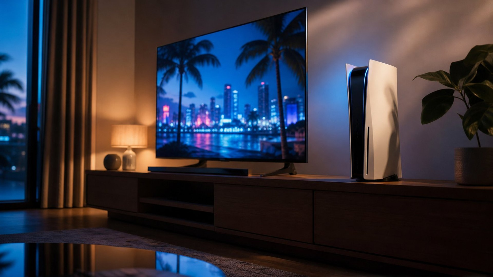
La meilleure version n'est pas la plus chère : c'est celle qui tient la cadence sur votre écran. ILLUSTRATION IA
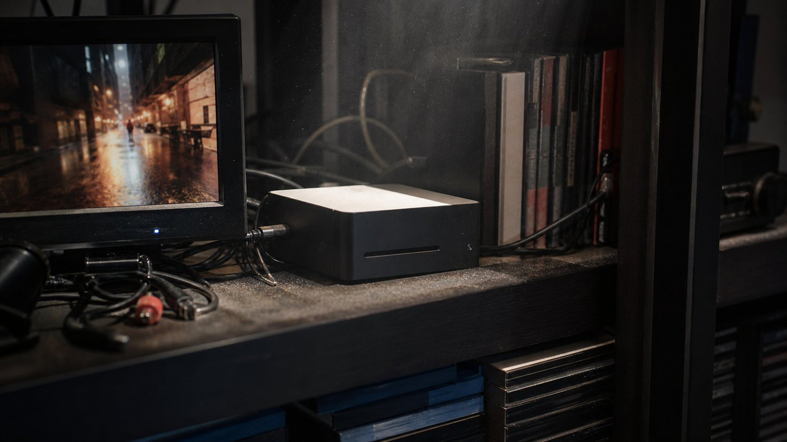
La plus petite console garde l'identité visuelle, pas la définition : 720p remontés en 1080p. ILLUSTRATION IA
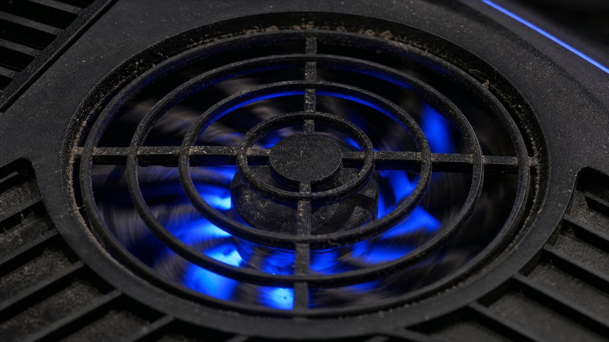
Ventilateur encrassé, images qui tombent : l'entretien est un réglage de performance. ILLUSTRATION IA
PRESSE · 19/11
Le direct de vingt-quatre heures, et pourquoi il faut s'en méfier
Un direct commence à minuit heure de l'Est le 19 novembre, précédé d'une pré-émission d'une heure. Ce n'est pas du contenu de jeu : c'est une retransmission. Et pour qui veut découvrir Leonida sans rien savoir, c'est un piège à spoilers de plus.
Ce que le direct n'apporte pas
Aucune mission, aucun contenu, aucun code. Il ne remplace ni le jeu ni les notes de version, qui n'existent toujours pas. Vingt-quatre heures à regarder quelqu'un d'autre jouer ne disent rien de votre propre partie. REL-31
Le vrai risque
Les premières heures du jeu défilent en clair, y compris des scènes que vous n'aurez pas vues. Si vous jouez en décalé à cause du fuseau horaire, la méthode reste la même : couper les recommandations, filtrer les mots-clés, et jouer d'abord. REL-31
Regarder les autres jouer le premier soir : le confort apparent qui coûte des spoilers. ILLUSTRATION IA
PRESSE · 18/11
Minuit : la séquence exacte, minute par minute
Une fois n'est pas coutume, cette page ne parle pas de jeu mais d'installation. Voici ce qui doit être fait, et dans quel ordre, pour que la première heure soit du jeu et non du téléchargement.
Avant 23 h 45
Vérifier l'espace libre : 212 Go demandés, prévoir plus.
Lancer la mise à jour système PS5 (26.07-14.23.00) si elle n'est pas installée.
Vérifier que les deux correctifs (1.002 et 01.002.001) sont terminés.
Laisser la console en veille connectée : les téléchargements continuent.
À minuit
Lancer le jeu ; si un message d'erreur apparaît, consulter le dépannage avant de réinstaller.
Passer par les options : sous-titres, taille d'interface, sensibilité de caméra.
Ne pas chercher à tout faire : le premier chapitre est un tutoriel déguisé.
Sauvegarde manuelle dès que la main est rendue.
Le piège le plus courant — croire que le jeu est cassé parce qu'il ne se lance pas à 22 h. Le déblocage suit minuit local dans chaque région, pas une heure mondiale. Un jeu préchargé lancé avant minuit ne fera rien, et c'est normal.
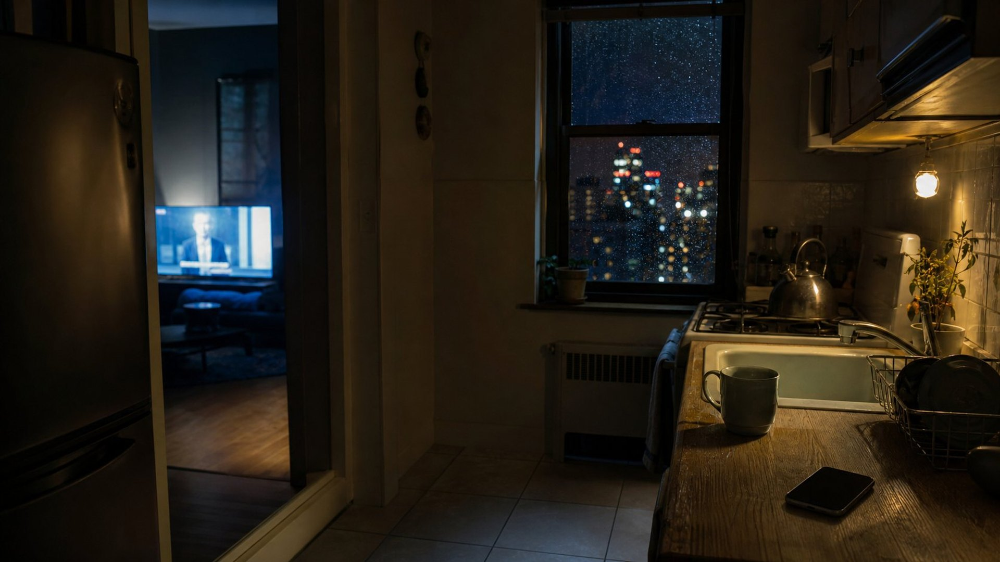
Minuit, la vraie : une porte ouverte et une lumière bleue. Illustration originale générée par IA (JPG, non officielle). ILLUSTRATION IA
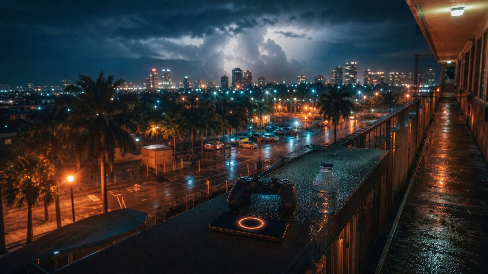
Minuit local, pas minuit mondial : la ville s'allume quand votre fuseau arrive à zéro. ILLUSTRATION IA
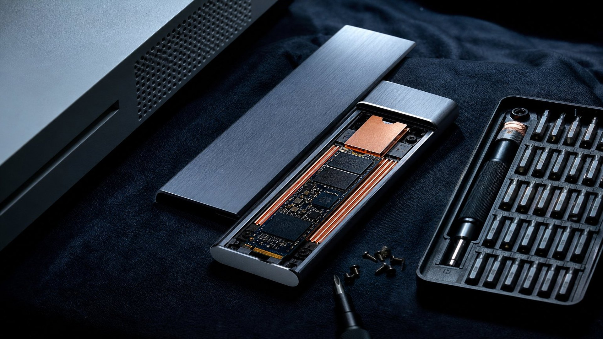
La seule préparation matérielle qui sert vraiment : de l'espace, et un tournevis. Illustration originale générée par IA (JPG, non officielle). ILLUSTRATION IA
PRESSE · 18/11
Les premières heures, machine par machine
C'est la question que tout le monde se pose avant de lancer une session de six heures : est-ce que ça tient ? Les mesures publiées le jour de l'ouverture donnent une réponse nuancée, et très différente selon la console.
Ce qui a été mesuré sur versions commerciales PRESSE · 18/11
Machine
Comportement décrit
À retenir
PS5 Pro
Essentiellement 30 fps, PSSR et ombres par ray tracing. DIA-05
La version la plus stable et la plus propre visuellement.
Xbox Series X
Proche de 30 fps en jeu normal, chutes dans les scènes intenses. DIA-05
Très bon compromis ; les moments chargés se sentent.
PS5 de base
Oscille entre 30 et la fin de la vingtaine en déplacement et en combat. DIA-05
Là où les réglages comptent le plus (voir la FAQ).
Xbox Series S
De longues portions dans la vingtaine, chutes plus bas dans les séquences les plus chargées ; densité de monde conservée. DIA-05
Le plus instable des quatre — mais pas le plus mauvais jeu.
Le pire cas est mesurable
Sur un point de destruction de véhicules au lance-grenades, le frame rate tombe jusqu'à environ 24 fps avant de remonter en quittant la zone. Ce n'est pas une généralité : c'est un scénario extrême, utile pour savoir à quoi ressemble le plancher. DIA-05
La conduite est plus lourde, et c'est voulu
Les retours convergent : la conduite se situe entre GTA IV et GTA V, plus lourde qu'attendu. La visée assistée est jugée trop généreuse par plusieurs joueurs, qui la baissent d'un cran. DIA-04
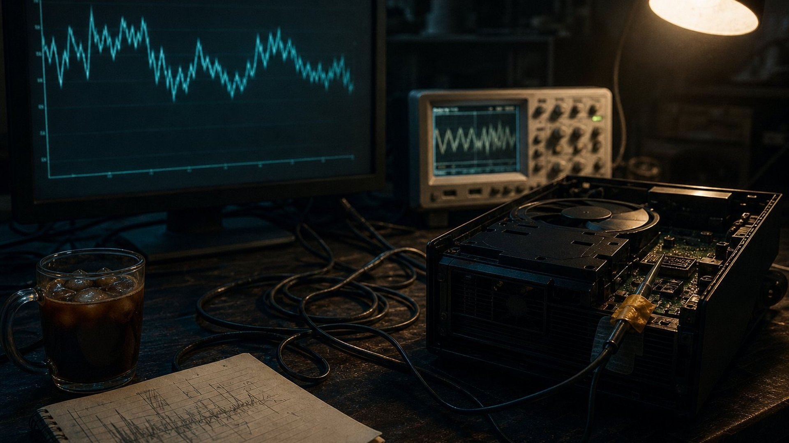
Trente images par seconde, quatre machines : la nuance est dans les creux, pas dans le chiffre. ILLUSTRATION IA
PRESSE · 18/11
Douze heures sans spoiler : la méthode
La protection anti-spoiler la plus citée n'est pas technique, elle est comportementale : couper les recommandations. Voici ce qui fonctionne réellement, par ordre d'efficacité. TIP-52
Mesures par ordre d'efficacité
Mesure
Effet
Effort
Couper les mots-masqués sur X et TikTok
Le plus efficace : la majorité des fuites passe par les titres et les commentaires
2 minutes
Éviter les titres YouTube
Très élevé : les chaînes de « slop » misent tout sur la miniature et le titre
Immédiat
Quitter les fils d'actualité et les serveurs Discord bruyants
Élevé, mais réversible en un clic après votre session
Immédiat
Désactiver les aperçus de lien dans les messageries
Moyen : les captures arrivent surtout par les groupes
5 minutes
Ne pas lire les tests avant d'avoir joué
Élevé : même sans spoiler explicite, ils décrivent la structure narrative
—
Notre propre page Tests de la presse est écrite pour être lue sans risque narratif : elle ne raconte ni mission, ni fin, et le seul passage qui touche au récit est masqué derrière un SpoilerToggle.
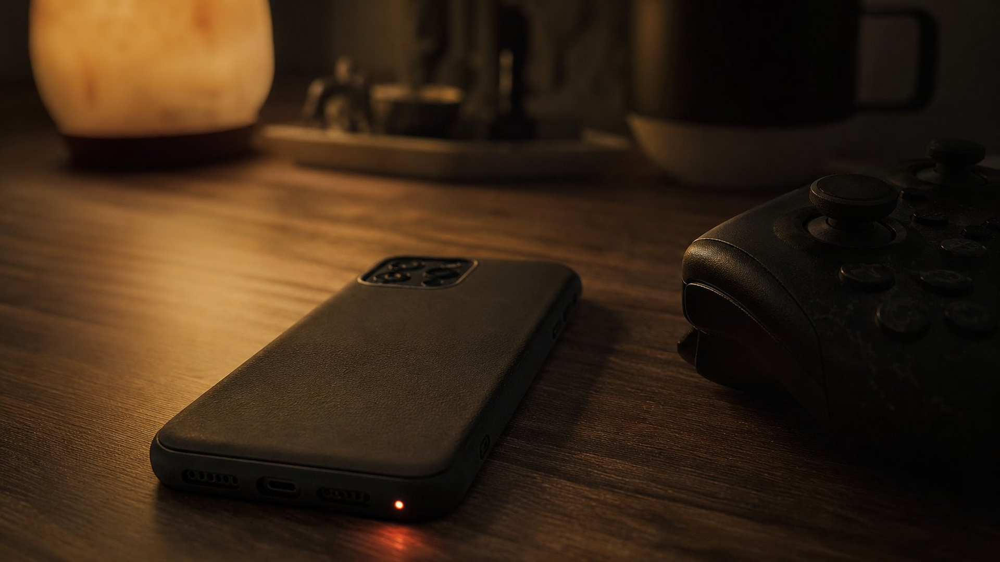
Illustration originale générée par IA (JPG, non officielle) : le téléphone retourné, mesure anti-spoiler la plus simple qui existe.
PRESSE · 18/11
Technique : les versions commerciales mesurées
Nouveauté du 18 novembre : Digital Foundry a publié son analyse des versions commerciales, Xbox comprises. Les chiffres remplacent enfin les prédictions. REV-26
Mesures sur versions commerciales
Machine
Résolution interne
Rythme
Pire cas
PS5
1440p
30 fps régulier (33 ms)
23 fps sur explosions lourdes FAQ-08
PS5 Pro
1440p + PSSR
30 fps quasi constant
24 fps ponctuels, ombres RT exclusives
Xbox Series X
~1440p
30 fps la plupart du temps, VRR 120 Hz
~20 fps en fusillade dense REV-26
Xbox Series S
~720p
Sous 30 fps fréquemment
Pop-in marqué, reflets et ombres dégradés REV-27
Bonne nouvelle inattendue — les cinématiques ne souffrent plus du tremblement d'animation qui affectait le moteur RAGE depuis des années. REV-28
Latence — environ 180 ms, comparable aux autres jeux Rockstar à 30 fps ; sur Series X, le VRR en sortie 120 Hz lisse les chutes. REV-28
Ray tracing — illumination globale et reflets sur les deux Xbox ; les ombres ray-tracées restent l'exclusivité de la PS5 Pro. REV-29
Aucun mode 60 fps — la conclusion de Digital Foundry ne change pas : le coût CPU d'une image à 16,7 ms imposerait de sacrifier le monde lui-même.
Comment lire ces chiffres — un 20 fps dans une fusillade à vingt PNJ n'est pas un jeu « qui rame ». C'est une chute ponctuelle dans le pire scénario possible. En conduite, en exploration et en mission classique, la cadence tient.
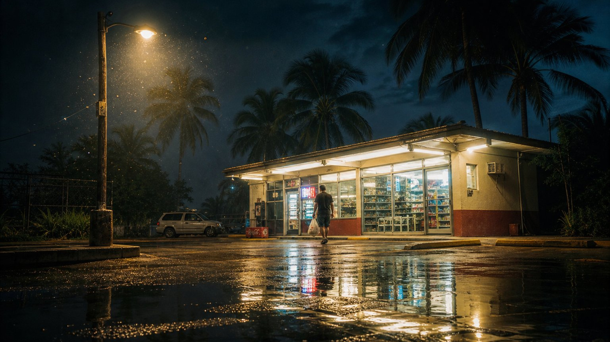
Illustration originale générée par IA (JPG, non officielle) : la session de nuit, quand la ville tourne au ralenti et que le moteur respire.
PRESSE · 18/11
Les pièges de la première nuit
L'astuce néo-zélandaise — sur Xbox, changer la région de la console suffit et vous jouez votre propre version. Sur PS5, il faut un compte PSN néo-zélandais et un achat sur ce store : payer deux fois. REL-25
Bug de préchargement Xbox — le téléchargement affiche ~200 Go puis s'arrête sur quelques centaines de Mo. Supprimer et relancer l'installation règle le problème dans la majorité des cas rapportés. REL-26
Suspensions de comptes PSN — des rumeurs circulent, aucune confirmation de Sony ni de Rockstar. Ne construisez pas votre soirée sur une rumeur. REL-27
Notes utilisateurs — elles n'ouvrent que 36 heures après le lancement. Tout score « joueur » vu avant est fabriqué. REV-30
Le vrai piège — passer la première heure à régler, comparer, vérifier des chiffres et lire des forums. Le jeu est là. Le reste peut attendre demain.
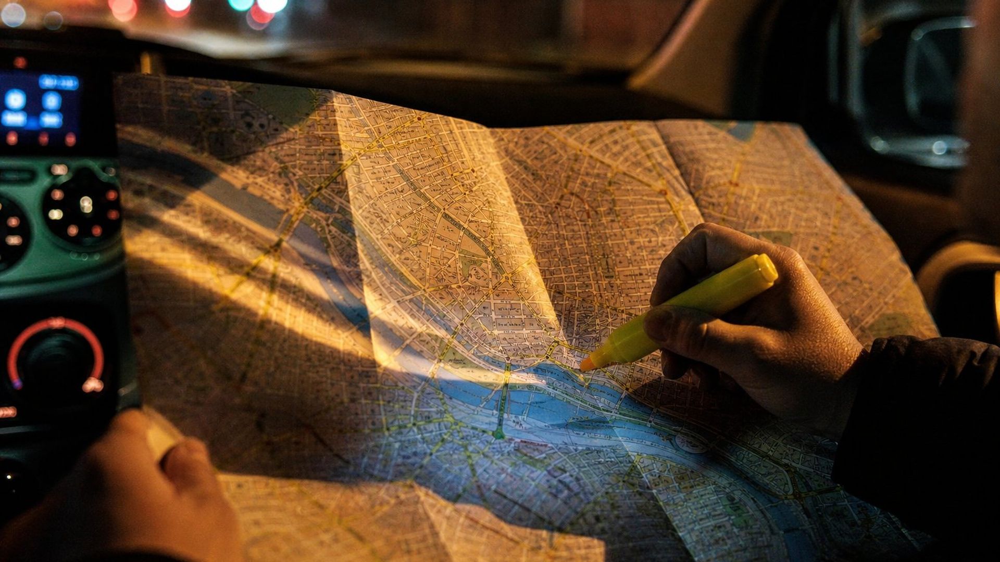
Illustration originale générée par IA (JPG, non officielle) : préparer sa route, puis oublier la carte et rouler.
Deuxième session : ce qui change
Ouvrir la checklist des collectibles seulement après avoir joué librement une heure : sinon on joue une liste, pas un jeu.
Faire un aller-retour de nuit sur la côte : c'est là que le rendu des sols mouillés et des néons se remarque le plus.
Garder les réglages HDR pour la fin : les ajuster à la lumière du jour fausse la perception du rendu nocturne.